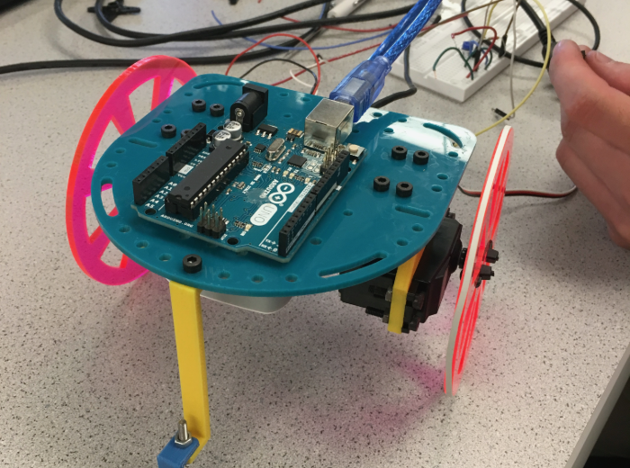

This lab is an introduction to the Aruidno IDE. The team is split into two subteams to perform the same tasks. In the end of the lab, both subteams were able to control the LED and servo, which are then used to build the robot below.
The first task is to blink the LED on board on and off every second. The LED on board is connected to pin13, which is also defined as LED_BUILTIN in the macro.
The Arduino program requires two functions: setup() and loop(). The function setup() is the initial function which enables input and outputs, then Arduino runs loop until the program is shut down. In the setup function we set LED_BUILTIN as output by the following line: [add code snippets]. Then int he main loop, we first turns the LED on by calling digitalWrite() to set LED_BUILTIN to HIGH delay it for 1000ms, then turns it off by writing LOW. [add code snippets]
The code is an example from http://www.arduino.cc/en/Tutorial/Blink
[assembling]
After we assemble the robot, we tried writing the value 90 to both of the servo, which is supposed to stop it. However, the servo instad rotates in the opposite direction. The TA then told us this is becasue the servos were not calibrated, and we have to tune it using a small screw on one side of the servo. The servos were tuned, and were able to travel in a straight line by writing 45 and 135 (since the servos have opposite orientation) to each of the servo.
At the end, the robot was able to travel almost in a square on its own, although it takes a 270 degree turn instead of 90 degree. To achieve this, we need four functions in the main loop: turn, delay, straight, delay. The delay function determines how much the robot turns, and is now set up be 3 seconds. Therefore, the experimental result shows that the robot turns at about 90 degree per second. This value is yet to be determined more previsely in future labs. The robot is then traveled in a straight line for 3 seconds at half of the maximum speed (value of +/- 45). In the future, we also need to determine the distance traveled associated with the speed and time.